서문에서 북문으로

암문
서문의 지나친듯 하고 중간에서 본 서암문
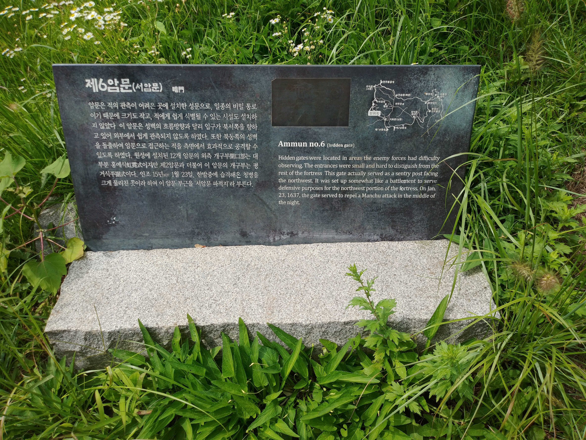
제6암문 안내문
일종의 비밀 통로라나
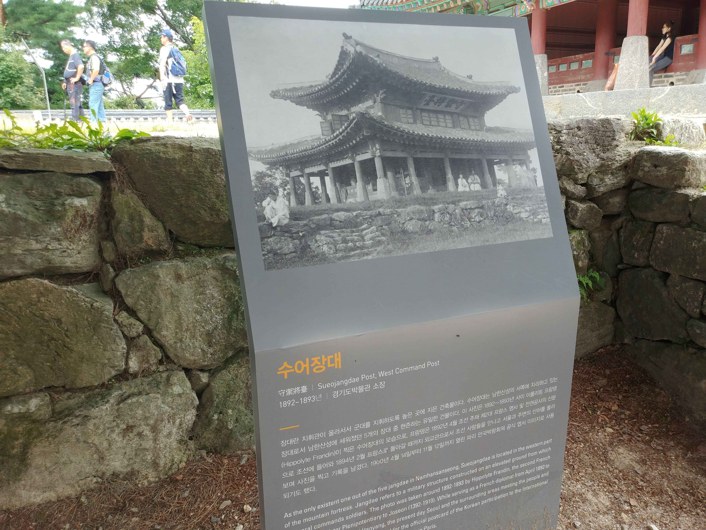
수어장대
안내문
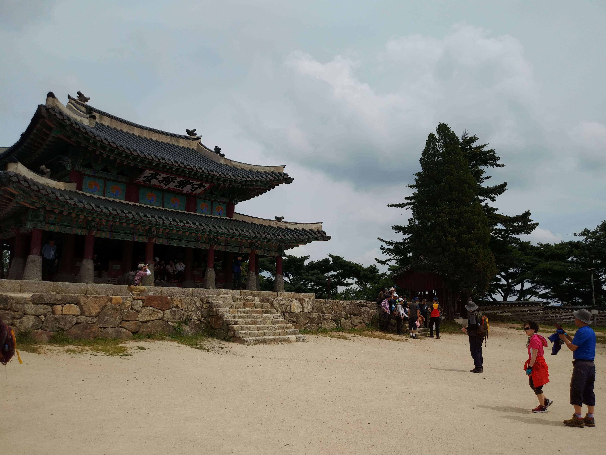
수어장대
수어장대 현판이 있다
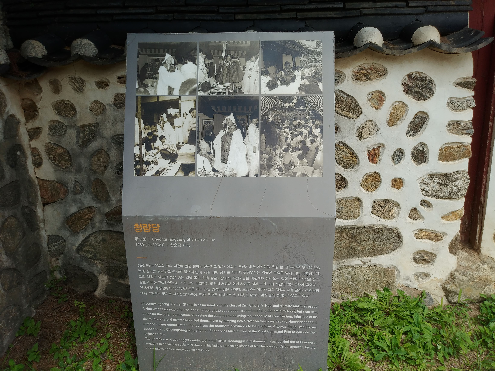
청량당 안내문
전설이라나 어느시대에나 모함꾼이 있다
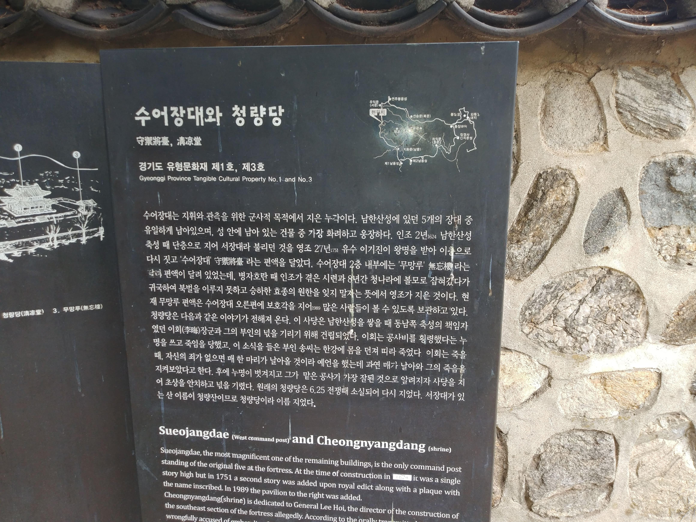
수어장대와 청량당 안내문
수어장대 입구에 청량당이 있다
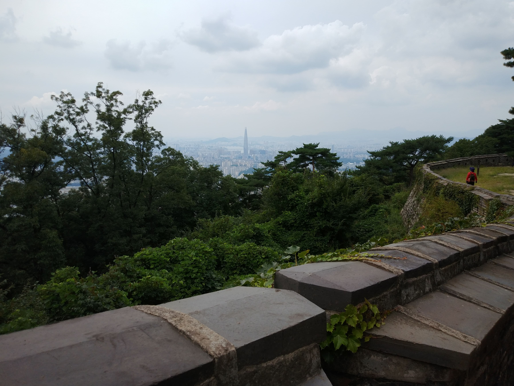
서문 과 북문사이
멀리 롯데월드가 조그맣게 보인다
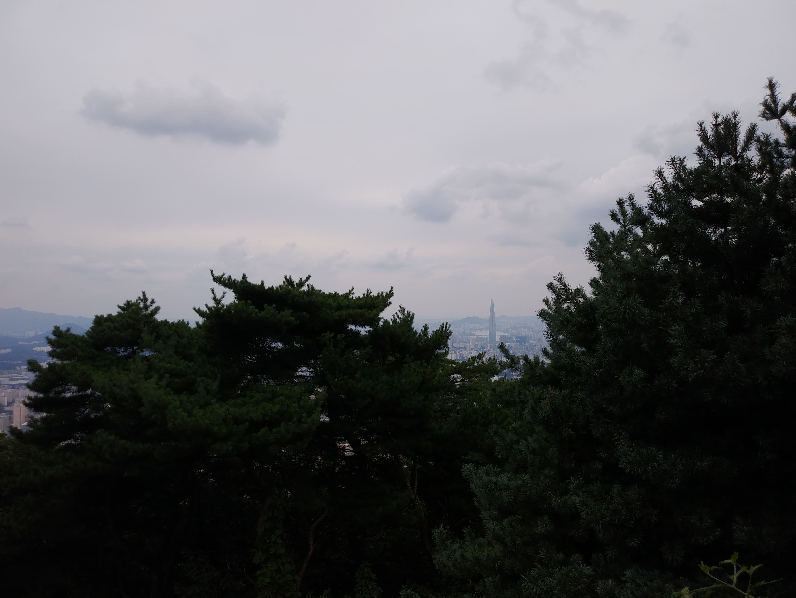
서문 과 북문사이
나무사이로 서울시가 보인다
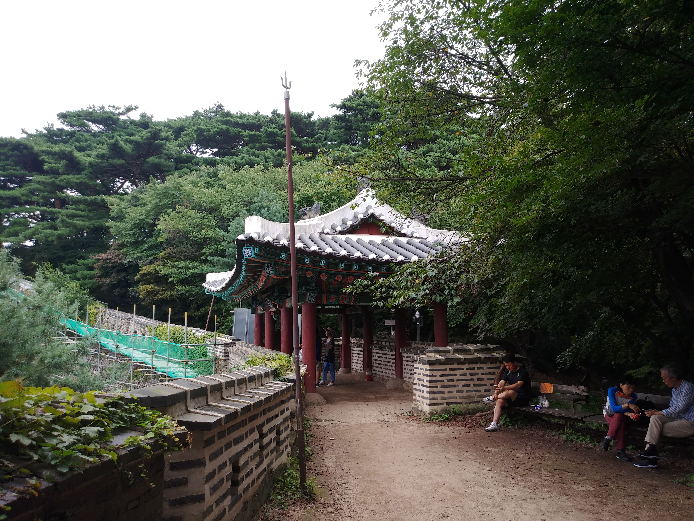
서문 과 북문사이
중간에 군사가 이용하던 건물이 있다
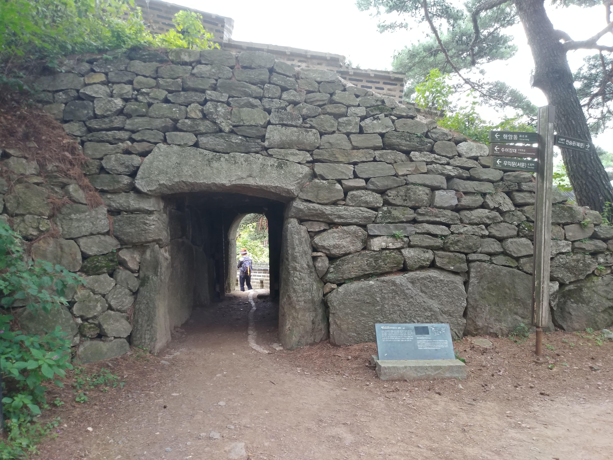
제5암문
군데 군데 암문이 있다
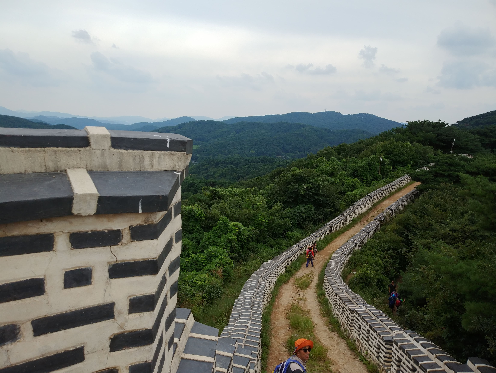
북문과 과 로타리사이
연주 봉옹성이 끝 부분에 있다
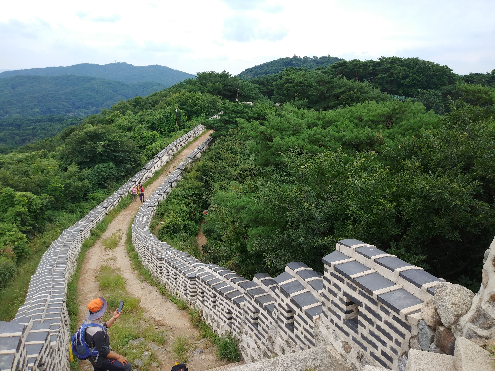
북문과 과 로타리사이
연주 봉옹성이 끝 부분에 있다
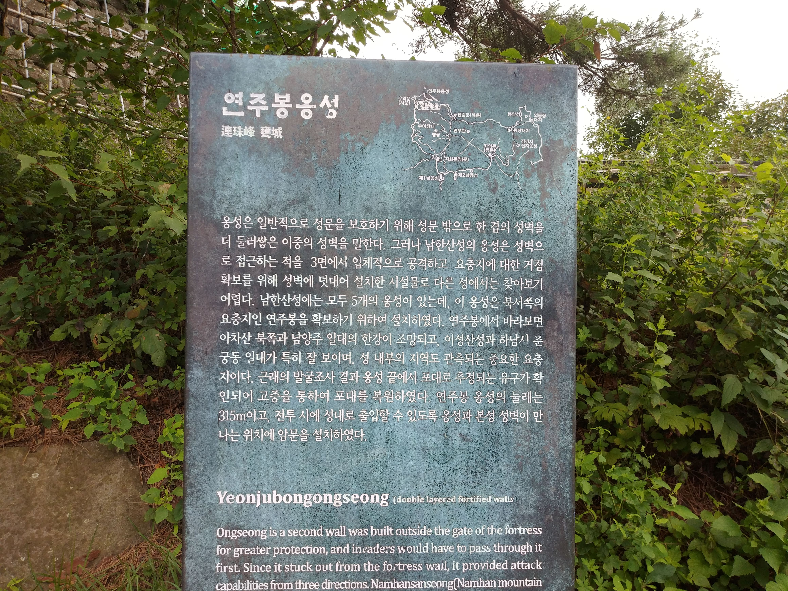